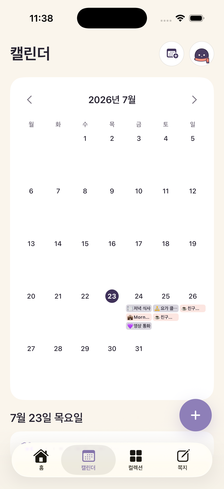
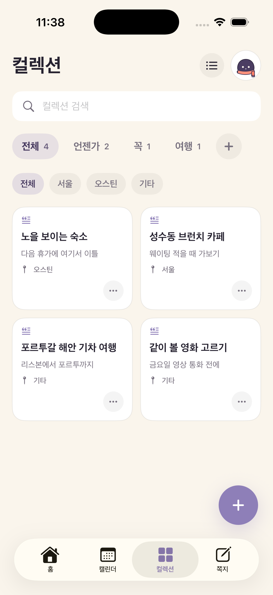
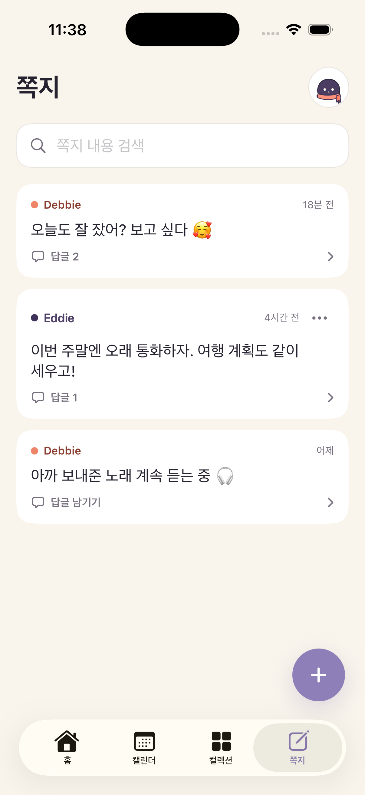

그 사람의 지금
현지 시간, 날씨와 다음 일정을 한눈에.
ONE MOMENT, TWO DAYS
내 일정과 상대 일정을 각자의 현지 시간에 맞춰, 둘 다 비는 시간까지 한 화면에 보여줘요.
WHY WE MADE NARU
한 사람의 퇴근은 다른 사람의 출근이 됐어요. “지금 전화해도 돼?”, “이번 주말 몇 시가 괜찮아?”를 매번 계산하고 묻는 대신, 우리가 이미 쓰던 캘린더로 서로의 하루를 볼 방법이 필요했어요. 그래서 Naru를 만들었습니다.
멀리 있을 때 특히 유용하고, 가까이 있는 날에도 둘의 일정과 기록은 그대로 이어져요.
02
THE PRESENT
자는 중인지, 일정 중인지, 둘 다 비는지. 위치 추적 없이 시간과 캘린더만으로 알 수 있어요.
서로의 지금을 한 화면에 나란히.
일정은 각자의 현지 시간에 정확히 맞춰요.
둘 다 깨어 있고 비는 구간을 찾아줘요.
03
THE THINGS YOU SHARE
외부 캘린더는 연결하고, 다음 데이트와 짧은 쪽지는 함께 쌓아요.
CALENDAR · 01
iPhone 캘린더와 Google Calendar에서 공유할 것만 고르면 Naru와 위젯에 함께 보여요. 시차가 있어도 일정은 각자의 현지 시간에 맞춰져요.

COLLECTION · 02
“릴스에서 본 성수 와인바”, “다음 휴가엔 포르투갈”처럼 흘려보내기 쉬운 계획을 링크와 사진으로 모아요.

NOTES · 03
“회의 끝나면 10분만 통화?”, “집 도착하면 알려줘”처럼 답을 재촉하지 않는 쪽지를 남겨요.

NARU PLUS
처음 연결하면 Plus 7일이 바로 시작돼요. 카드 등록도, 자동 결제도 없어요.
MADE FOR TWO
실시간 위치는 받지 않아요.
둘의 기록을 광고에 쓰지 않아요.
연결을 끊으면 공유도 바로 멈춰요.
같은 도시에 있어도, 다른 시간대에 있어도. 처음 연결하면 Plus 7일이 시작되고 자동 결제는 없어요.
출시 알림 받기